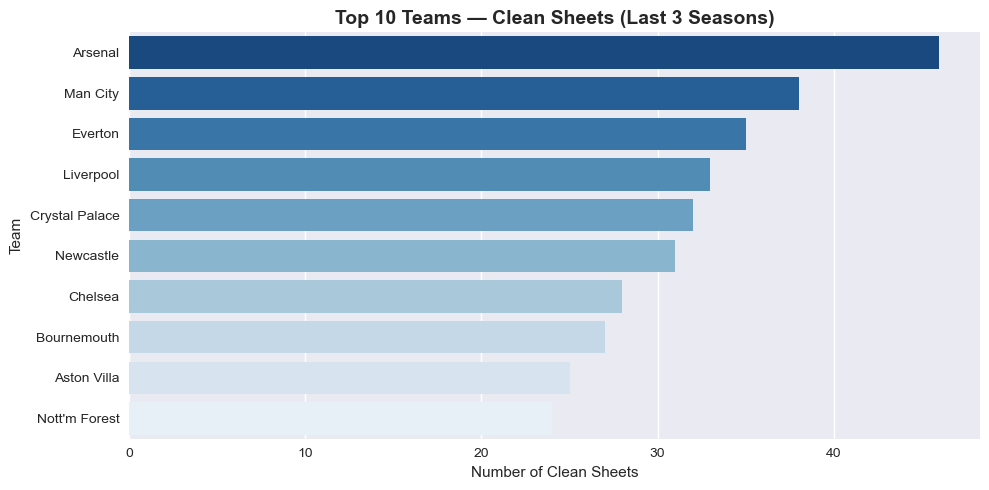

Premier League Performance Analysis
Tools: Python 3.12 · Pandas · NumPy · Matplotlib · Seaborn · Jupyter · VS Code · data from football-data.co.uk
I picked football because every row is a story: a result is already a structured experiment in tactics, luck, and sample size. Three seasons of Premier League fixtures gave me enough volume to build a credible league table from scratch, stress-test aggregations, and still keep the narrative grounded for non-technical readers.
The pipeline loads and cleans multi-season CSVs, merges seasons consistently, then moves into EDA: home vs away splits, goals trends, correlation between shots on target and goals, and team-level leaderboards. The outputs live as a chart library in the repo — including extremes like biggest margin wins and defensive consistency (clean sheets), which recruiters can skim in seconds.

